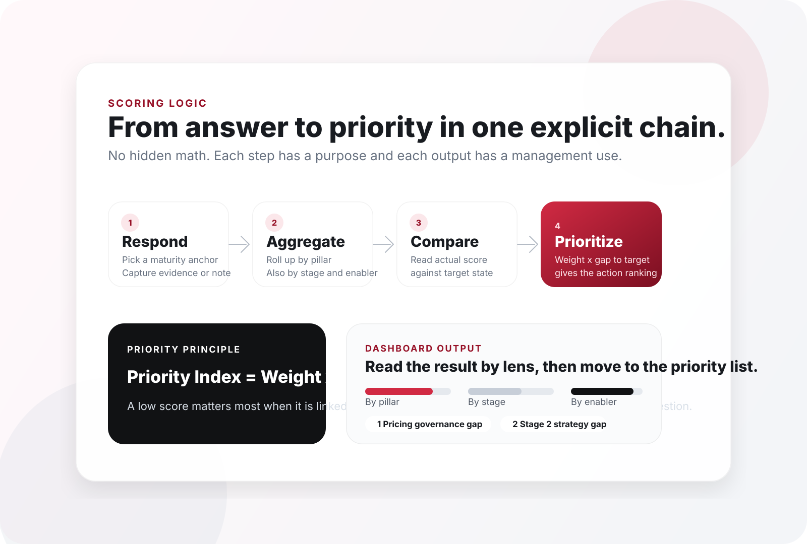

Respond
Each question is scored against a maturity anchor, with optional evidence notes.
Scoring Logic
This page focuses on the logic chain: score selection, aggregation, comparison to target, and action prioritization.
The portal prioritizes weighted gaps to target, not weak answers in isolation.
Logic Diagram
One diagram compresses the logic from answer capture to ranked action.

From Answer To Action
Each question is scored against a maturity anchor, with optional evidence notes.
Scores roll up into averages by pillar, stage, and enabler.
Actual maturity is read against target maturity so the system can calculate gap size.
Weighted gap-to-target logic ranks the questions that matter most for action planning.
Interpretation Notes
Use this view to see which commercial lever is most exposed across Pricing, OBPPC, Promotion Spend, and DFR / Trade Investment.
Use this view to see where the operating chain breaks: diagnosis, strategy, policy, execution, or sustainability.
Use this view to see which enabling condition needs strengthening: governance, tools, people capability, or future readiness.
Priority Logic
A low score only becomes urgent if it is tied to a real target gap and a materially important question.
Suggests improvement need, but not necessarily immediate urgency.
Becomes a top roadmap candidate because it blocks capability more materially.
Signal a systemic issue, not just a weak individual answer.
Ready To Score